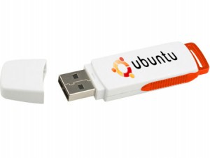
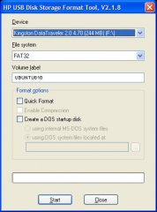
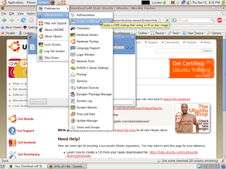
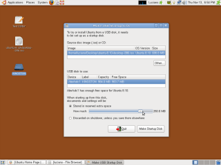
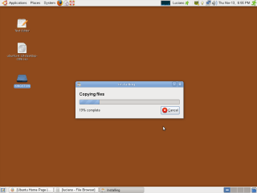
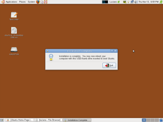

Instalando Ubuntu 8.10 no Pendrive USB
A Canonical lançou a versão final do Ubuntu 8.10 codinome (Intrepid Ibex), dentre algumas das novidades estão o suporte a tecnologia 3G e a portabilidade que se dá pela possibilidade de instalar o Ubuntu em um Pendrive USB.
Rodar o Ubuntu através de um Pendrive é muito melhor que usar um LiveCD, em uma porta USB 2.0 a taxa de transferência é muito maior que a a leitura de um CD.
Outra vantagem é a possibilidade de customizar o Ubuntu, podendo instalar aplicativos no Pendrive, opção esta não permitida no LiveCD.

Ubuntu no Pendrive
Quem sabe agora a Canonical comece a distribuir o Ubuntu em Pendrive, seria interessante já que o preço dos Pendrives atualmente está baixíssimo. Teriam apenas que controlar as solicitações para não ter algum espertinho (brasileiro) querendo comercializar o produto.
Procedimento de Instalação do Ubuntu no Pen drive USB
Para instalar o Ubuntu em um Pendrive USB você vai precisar de um Pendrive USB de no mínimo 1GB, ter instalado o Ubuntu 8.10 e ter em mãos a ISO do Ubuntu 8.10 ou o CD de Instalação.
Importante: Você deve formatar o seu Pendrive em FAT32 e colocar como Label o nome UBUNTU810 , formate seu Pendrive utilizando o Utilitário (HP USB Disk Storage Format Tool), pois formatando com outras ferramentas deu problema na hora do Boot pela USB.
{kind=link}
1 – Clique no menu System / Administration e Selecione o Aplicativo Create a USB startup disk
{kind=link}
2 – No Aplicativo Selecione a ISO ou o CD de Instalação do Ubuntu e Informe o Pendrive onde o Ubuntu será Instalado. Você deve marcar a opção Stored in reserved extra space caso deseje salvar seus documentos e configurações por padrão no Pendrive. Para isso marque a opção e informe o quanto de espaço será reservado no Pendrive. (Eu reservei 250MB de espaço extra)
{kind=link}
3 – Com tudo configurado, clique em Make Startup Disk e aguarde o termino do processo
 {kind=link}
{kind=link}
Bom agora você deverá configurar o seu PC na BIOS para que o Boot primário seja dado na porta USB. Feito isso basta plugar o Pendrive com o Ubuntu e inicializar seu computador.
Leia mais:
Olá, uma opção para formatação é: boot pelo cd-live, e já efetua a formatação do pen-drive pelo GParted, “Editor de Partições”, funciona muito bem e é muito simples.
Olá Saulo, pelo GParted eu não cheguei a tentar. Bem lembrado.
Abraços
Luciano
Pessoal, funcionou maravilha formatando o pen drive pelo Gparted. Depois foi só seguir os passos do tutorial.
Experimentei dar o boot pelo pen drive e alterar algumas configurações, fazer atualizações e depois que reiniciei o pen drive, beleza. Tudo salvo.
No entando, quando tentei configurar uma rede wifi ele pediu uma senha para o applet que faz a configuração da rede e, sinceramente, não sei qual é. Tentei “ubuntu” e nada. Até criei um usuário novo com senha e tudo, mas ele continua pedindo a tal senha para o configurador de rede wifi.
Alguém poderia me ajudar?
Obrigado,
roberto
Mais um ubuntunizado!!!
Eu tinha experimentado outras versões mas meu computador não aceitava mais boot pelo cd, eu tive que ficar usando a merda do windows, foi quando eu pensei em dar boot por usb, mass com as versões anteriores não havia conseguido. Quando encontre este endereço no google foi tiro e queda, mas tive um pequeno problema, segui as instruções acima inclusive a do segundo passo em que foi deixado 250 M livres. deu tudo certo mas quando eu tentei atualizar o sistema aacabou o espaço e deu pau,
eu então formatei pen drive novamente e quando instalei o ubuntu deixei o máximo de espaço livre possível. e agoraa ta tudo beleza..
Obrigado
meu pen drive ta umaa maquina!!!
Fernando
Olá Fernando,
Realmente fica muito bom, havendo espaço no pendrive o melhor é liberar o máximo possível de espaço para as configs.
Estou pensando em comprar um Pendrive maior.
Abraços
Luciano
Olá gostaria que alguém pudesse me ajudar: Quando instalo o linux no pendrive na hora do boot me aparece uma mensagem na inicialização do sitema que diz: boot: e não sai disto, tentei colocar alguma senha mais não dá certo, fiz isto e 3 pendrives diferentes um de 2, outro de 4 e outro de 8 gigas, somente no de 1 giga deu certo, nos demais sempre dá esta mensagem, já fiz tudo na formatação como vcs estão explicando usei até pelo Gparted mais continua do mesmo jeito, alguém poderia me dar uma dica para eu poder rodar ele nos demais pendrives de gigas maiores? obs: todos os pendrives são da marca Kingston!! Obrigado!!!!
Olá Elizeu,
Eu enfrentei este problema na primeira vez que fui instalar o Ubuntu no Pendrive.
Mas depois de realizar a formatação com o programa indicado funcionou normalmente.
Meu Pendrive é de 1GB.
Olá Tio Geek, eu fiz com todos os programas indicados e continua acontecendo a mesma coisa, todos os pendrives acima de 1 giga dão esta mensagem, já não sei o que faço!!!
por acaso esse procedimento serve pra gerar pendrive bootal do eeebuntu?
Muito legal seu tutorial, mas se preciso ter o ubuntu instalado na máquina pra poder instalar no pendrive, já não é interessante, por que o ubuntu não é como o slax que é só extrair os arquivos para o pendrive dar dois cliques no arquivo bootinst, e reiniciar a maquina e pronto em menos de dois minutos já esta com o linux rodando em um pendrive.
não entendo porque tanta burocracia para instalar o ubuntu em um pendrive.
Tecnicamente, nao precisa ter o Ubuntu instalado. Entra com o Live-CD e instala por ele. []s
Quando tento formatar com esse programa da HP diz que o dispositivo está protegido contra gravação, mas pelo XP formata legal. Qual o problema?
Tente formatar com o GParted
Uma duvida… eu quero usar o sistema no pen drive e acessar a internet 3g da claro por ele, isso seria possivel?
Sim é possível.
O Ubuntu tem suporte ao 3G.
Dê uma olhada aqui -> http://www.tiogeek.com/2008/11/kw=banda-larga-3g-no-ubuntu
Bom coloquei o sistema no Pen drive e ficou Otimo consigo dar boot em qualquer maquina aqui e melhor quarda todas as minhas configurações, mas não esta reconhecendo o meu modem 3G ZTE MF622 da claro. sera que tem alguma solução para isso, pois estive pesquisando e não vi ninguem com esse problema.
Alguem poderia me ensinar a instalar o Ubuntu só que pelo console ?
fiz a instalação e correu normalmete, mas quero istalar em um notbook e só tem a opção de boot por usb fdd , testei em outra máquina que tem a opção usb hdd e deu certo mas em usb fdd não foi !! pq?
formatei pelo gparted.
Edson,
Aqui no meu com tinha USB ZIP e funcionou. Você colocou a opção USB FDD como Boot Primario?
isso é muito facil de fazer.Eu tenho um pen drive de 16 GB,tenho nele 3 versoes do linux se alguem quizer ajuda ai o msn
hackerkwy@hotmail.com
Segui à risca as instruções, mas sempre que vou usar, na hora do boot tenho que escolher o idioma, e depois escolher a opção instalar neste computador, inciar a instalação e abortá-la para poder usar o ubuntu no pen drive. Gravou os arquivos que criei normalmente, mas tem esta falha, e é muito chato, pois só aí perco uns 10min, fora as vezes que dá erro e tenho que reiniciar o pc. Tem alguma maneira de usar direto sem toda essa cerimônia ? Parabéns pelo tutorial !
Se na hora do boot o syslinux apresentar apenas um prompt “boot:” (não encontrou o arquivo de kernel) tentem essa solução: http://ubuntuforums.org/archive/index.php/t-1064925.html , ou seja, formatar o usb em FAT16.
Consegui ! Refiz tudo! Formetei pendrive, instalei de novo o Ubuntu, mas no hora do boot aguardo os 30 segundos e pronto ! Inicializa direitinho. Poxa, gostei muito do Ubuntu, instalei alguns programas que baixei do site getdeb.net e ficou jóia(só consegui instalar programas .deb). Ouço rádio on-line e tudo mais! Instalei Gadgets do Google ficou mais legal ainda. Parabéns mesmo !
Obs: Meu pendrive é de 8Gb.
Contras: Só não consegui fazer funcionar minha placa wireless, ele nem a reconhece. Meu pc é um notebook Lenovo 3000 C200 Vista Home Basic Placa Broadcom. Se alguém tiver alguma dica, fico agradecido.
Cara toda vez ele pede o idioma quando mando testar apenas aparece a tela em modo texto e tenho que da o comando starx toda vez o que eu faço abraços
Oi Luciano! Muito bom esse tutorial! Gostaria de saber se dá pra instalar o ubuntu 9,04 no pendrive usando o live cd!
Valeu! Obrigado!
Eu nao entendi como instalar o ubuntu na pen drive sem ter previamente instalado o ubuntu na máquina. Eu tenho o Xp e o CD de instalação do ubuntu, como procedo?
Carlos é só você seguir o Tutorial, na parte 2 está dizendo que você pode utilizar a ISO ou o CD, no seu caso basta utilizar o CD.
Boa tarde .
Este processo da instalacao do ubuntu no pendrive funcionaria em um hd externo ? Alguem ja tentou ?
Marcelo,
Você pode tentar, acredito que funcione sim.
Houvi dizer que pode instalar a internet Claro 3G. O meu cd do Ubunto é 7.10 e não reconhece arquivos .exe. O modem da Claro é o Huawel. Então como fazer?